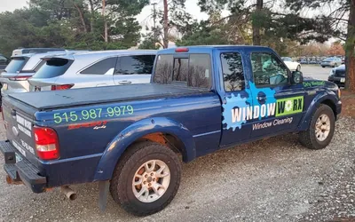

Family-owned & trusted since 2009. We bring sparkling clean windows to Waukee, West Des Moines, Clive, Urbandale, and the entire Des Moines metro.
From standard residential to mid-rise commercial [icon-dash] we handle windows of all shapes and sizes.
Interior & exterior window washing for homes of all sizes. Streak-free results every time.
Learn More [icon-arrow-up]Full inside + outside service including sills, tracks, and screens. A complete clean from top to bottom.
Learn More [icon-arrow-up]We clean and repair window screens so your view is crystal clear and bug-free.
Learn More [icon-arrow-up]Professional window cleaning for commercial buildings up to 4-5 stories. Fully insured.
Learn More [icon-arrow-up]Three simple steps to cleaner, brighter windows.
Fill out our quick form or give us a call. We'll get back to you within 24 hours with a free, no-obligation estimate.
Our team arrives on time with all the equipment needed. We clean every window inside and out with professional-grade tools.
We do a final walkthrough to make sure you're 100% satisfied. Sit back and enjoy your sparkling clean windows!
We're not the biggest — but we care the most. Here's what sets us apart.
"We treat every home like it's our own. If you're not happy, we'll make it right."

We're not a franchise or a call center — we're your local Waukee neighbors. Every window we clean is done by us, the same team you see rolling up in this truck.
Stop by and say hi if you see us around town!
See Our Work →Real reviews from real homeowners in the Des Moines metro.
[icon-star][icon-star][icon-star][icon-star][icon-star]"Window Worx did an amazing job on our windows. They were thorough, professional, and the windows look fantastic. Highly recommend!"
Sarah M. Waukee, IA
[icon-star][icon-star][icon-star][icon-star][icon-star]"We've used Window Worx for years. They're reliable, fair-priced, and always do a thorough job on both interior and exterior. Best in the metro!"
John & Lisa T. West Des Moines, IA
[icon-star][icon-star][icon-star][icon-star][icon-star]"Fantastic service from start to finish. Professional, punctual, and the windows sparkle! We appreciated their attention to detail."
David K. Urbandale, IA
Get your free estimate today. No pressure, no commitment [icon-dash] just a friendly conversation about your window cleaning needs.